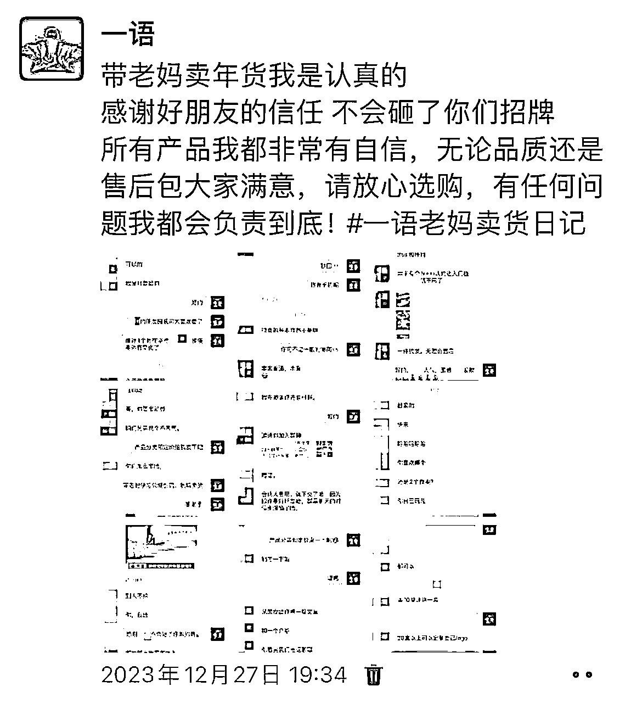

来源：https://kekh8opk8b.feishu.cn/docx/TcyEdPqAIoC8D4xg1f8cfHCGn9c
大家好，我河南郑州圈友一语，见字如面，本文约5000字，预计阅读时间20分钟。本篇文章是用来复盘，我是如何在春节期间带0基础的老妈，通过社群卖年货赚到第一个5000块，同时如果能够给到大家一点启发，一点帮助的话就更好了。
老爸老妈是做保洁的，老妈做室内保洁，老爸负责高空外墙清洗，去年老爸在工地上意外摔成重伤，我和老妈在医院里照顾了他小半年，年前总算顺利出院回到家。医生说下面就是在家慢慢调养，靠自己慢慢恢复，官司也在正常进行中。
老妈闲不下来，她知道我做过一些互联网项目，便让我给她找个能在家做，门槛低关键是要靠谱的项目，赚点小钱她就挺开心的。我认真筛选考察了很久，刚好马上要过年了，就决定带着她一起卖年货，当天我就发了一条圈进行官宣，表明我的态度和决心！
官宣后我便开始每天发圈记录卖年货项目进度，项目确定了，接下来是找优质的货源，第二天我便找了一些好朋友，代理了他们的好产品，顺便开了两家线上商城，可以满足大家大多数年货需求，这些产品我都非常有信心，无论品质还是售后包大家满意，可以放心选购，有任何问题我都会负责到底！

老妈平时朋友圈发的比较少，现在既然确定了想要通过朋友圈和社群卖年货，就必不可少要用朋友圈宣传，朋友圈最忌讳的就是没有生活，全是广告。那朋友圈具体要怎么发，发多少圈合适呢，这确实是一门学问。
之前听不少朋友说有时候灵感爆发，可以发很多条，有时候却灵感枯竭，一天也憋不出来一条朋友圈。其实无圈可发的背后原因是没有做好发圈内容规划，解决起来很简单，只需要提前做好一个月或者一周的朋友圈内容就好了，提前规划好的这些是静态朋友圈，定好闹钟准时发布。
灵感闪现和日常产生的新素材这些属于动态朋友圈，如果不想立刻发圈可以暂时放进自己的素材库中，和早就规划好的静态朋友圈穿插着发效果会更好。
基于以上静态朋友圈和动态朋友圈原理，我给老妈做了一周的朋友圈内容规划模板。
我让老妈梳理了一下自己现有的微信好友，列一份可能会支持自己的名单，让老妈去一对一的私聊，告诉大家她现在在学习卖货，希望得到大家的支持，这对她来说很重要。真诚一些，不拐弯抹角，不用不好意思，勇敢地踏出销售第一步。
我和老妈分享销售的心理卡点，拒绝销售就是拒绝赚钱，如果你内心都不相信自己能做好销售，突破不了自己的心理卡点，你就是在抗拒赚钱这件事本身。
把好产品卖给有需要的人，帮助对方大大降低挑选成本，这本身就是一种功德，对方开心还来不及了，无形中又拉进你们之间的关系。
老妈之前只会手写字，不会拼音输入，现在开始我“逼着”她练习拼音打字，我告诉她截止目前为止，文字依然是高效的沟通方式，且相比语音来说更容易沉淀下来方便查看，一定要练好打字这项基本功。
老妈听我的话照做，开始按照名单去私聊，第一个阿姨虽然只回了短短的几个字但态度明确愿意支持老妈，这对老妈来说是莫大的鼓励，更加坚定了自己可以做好这件事。
一旦开始了，最难的已经过去了。
老妈按照列好的名单一对一私聊好友，第二天聊了2，30个好友，大多数朋友都明确表示愿意支持。
其中有一些朋友说今年年货就找老妈买了，还会带朋友来买，有些朋友夸奖老妈说她太棒了给她非常大的鼓励信心。
甚至有的朋友看到老妈发的消息，直接打过来视频电话问都有什么年货，让发链接过去购买。
老妈说这些的时候激动的都哭了，说没想到大家这么捧场，这么信任她，她一定不会辜负朋友们的信任，把好产品带给大家。
我给老妈说，当你勇敢的踏出第一步，内心足够想要，全宇宙都会帮你实现。
这些姨姨都是好人，她们对你好是因为你本身就很好，你值得她们对你好，咱们要做的就是恪守本心，做好该做的，不辜负大家的信任。积累信任很困难，毁掉只需一瞬间。
终于赶在24年的前一天把年货群建好了
文案、图片、店铺二维码、群二维码、开业福利设置，并建群拉一个40人左右的新群
朋友们，大家好，我是群主开心幸福，感谢大家的信任，欢迎回家。
我在儿子的帮助下开了一家小店，店名群名就叫“开心幸福大家庭”，本意就是希望大家能把这里当成自己的家一样，常回家看看。
小店产品货真价实，可以放心选购，有任何问题我都会负责到底。
明晚8点也就是2024年的第一天小店正式开业，我为大家准备了一场开业活动，红包雨、有讲问答、抽奖、免单、等各种好玩的活动，欢迎大家一起带着家人来参与呀
（注：这个欢迎语言进来10几个人就欢迎一下，让大家知道你这个群是做什么的，切记，没有做开业活动之前，千万不要直接发产品广告。）
发完公告，发个红包欢迎一下大家，注意红包不要太小，千万别整1分的，2元10个包或者8个都可以
准备工作做好了呢，我们朋友圈儿也要跟上。
今天我要正式开始经营我的小店了！卖货真价实的好产品。
最近开启的小事业没想到大家都这么认可支持我，问我在哪里可以买，特别感谢大家，为了不在朋友圈过多刷屏，方便分享更多的好物给大家，特建了新群，欢迎大家扫码加入。（附带二维码）
评论区回复：小店明晚8点开业，到时候群里会有很多福利活动，比如免单，抽奖等等，活动力度非常大，一定要来呀
朋友圈的群邀请，可以几十遍的去刷，发一条，删上一条，这样不会造成刷屏，还会增加朋友圈的关注度，呼吁更多的人扫码进群。
朋友圈可以反复发，有一些人可能看到朋友圈儿了，但是没有进群，还有一些人呢，没有看到朋友圈儿。
接下来，就开始定向的邀请好友入群了，方案如下👇
1，XX妹子， 我最近在儿子的帮助下开了一家小店，以卖年货为主，希望你能够多多关照，产品货真价实请放心购买，有任何问题我都会负责到底，现诚挚的邀请你进群。
同时启动亲朋好友帮忙邀请人，亲友团同样也要参考邀人方式，发一段语音/视频+文字
以下是让亲朋好友帮忙发圈宣传的话术参考
1.这个是我姐在用心经营的小店 ，东西我用了质量很好。我也很希望能帮到她，群里产品涉及生活的方方面面，现阶段主要卖年货，如果有中意的，可以照顾照顾生意，如果没有，也没关系，凑个热闹，希望你的加入可以带来一份满满的人气。明晚八点🕗 举行开业仪式，到时候有红包雨，抽奖， 免单，非常欢迎你的到来！（群二维码）
2.朋友们，大家好呀，我娘开了一家小店在卖年货
有湖北恩施土家族的土腊肉🥩，地地道道的新疆瓜果牛羊肉🐮，品质不俗的海鲜零食大礼包🐟，还有极致用心只要送出去就会信任倍增的定制茶礼🍵，除此之外还有非常多的好东西等你来选，品质可靠价格合理，大家请放心购买
我也很希望能帮到她，马上就要过年了，家家户户都需要买年货，如果有需要的，可以照顾照顾生意。我娘是一个善良淳朴的农村妇女，她是第一次尝试在网上卖货，希望大家可以多多鼓励支持一下她，谢谢大家了
重点：引流工作花2天完成，给自己定目标，初次建群完成100-200人左右是最好的。
这个时候呢，邀请人的步骤已经做好了，我们就需要回到群里。
建群的第二天，打20个电话（开业帮助你的群活跃气氛），邀请亲朋好友、包括我们群内伙伴，潜在客户。
我们说建完群先打20个电话，这个步骤可能对绝大多数人来说都是觉得是一个挑战，电话更有诚意，主要是帮你活跃群氛围，不至于开业活动时冷场，同时也会是你的潜在消费大户
打电话内容：
妹子，我在儿子的帮助下开了一家小店，里边呢，有好多年货卖，这些产品货真价实，我今晚8点正式开业了，好紧张，你一定要来帮帮我，给我撑场子啊，产品你觉得用的上的你就买几单试一试啊，也是七天无理由退换呢，要是收到货非常满意呢，你帮我多多做下宣传哈
我很用心地在做这个事。你一定要支持我啊，谢谢你❤️
那么对方听了她一般都会说：好啊！恭喜恭喜呀 祝贺你啊！
或者说有合适的我就买买试试，一般对方这样的回答就相当于是一份承诺，当你开业了之后，她看到你群里发的产品，确实蛮优惠的，品质又不错，然后又是家里需要的，她就肯定会下单，也是为了兑现她做的这个承诺，顺水人情的事情一般都会去做的。
开业仪式前一个小时就可以发群公告发红包预热了
大家好，咱们的开业仪式倒计时还有1小时就要开始了，晚8点不见不散哦。
到时候会有红包雨和好玩的抽奖，免单等福利活动，一起狂欢，千万别错过呀！
晚上8点开业时间一到，放自己事先录好的视频，一定一定一定要自己拍一个，别懒哈!重要的事情说三遍！！！
大家好，我是开心幸福，在儿子的帮助下开了一家小店，感谢各位家人朋友的信任和支持，今天咱们的小店正式开门营业啦，产品涵盖生活的方方面面，现在主要以年货为主，产品货真价实，大家可以放心购买，有任何问题我都会负责到底，希望大家可以把这里当成自己的家，常回家看看哦，再次感谢大家，谢谢你们。
亲爱的家人朋友们，大家晚上好！
群里有熟悉我的，也有不了解我的，开始之前我先做个自我介绍
我是群主开心幸福，来自河南南阳，我是一名保洁工人，平日里工作兢兢业业勤勤恳恳，收获不少老板和业主好评，有一个儿子和一个女儿，一家人幸福和睦。
现在网上骗子太多了，大家防不胜防，人与人之间的真诚就显得弥足珍贵，但我有自己的底线，只赚良心钱。
如今年关已至，年货成了大家眼下的刚需，家家户户都需要买年货，我可以尝试着卖卖年货呀，帮助大家节省挑选成本的同时也能顺便赚点钱。
我和儿子女儿讲了我的想法，他们觉得非常好，决定卖年货后，儿子第一时间精选了一些好朋友的产品，这些产品我们都非常有信心。
然后我在儿子的帮助下开了一家小店，店名群名就叫“开心幸福大家庭”，本意就是希望大家把这里当成自己的家一样，常回家看看。
小店产品货真价实，可以放心选购，有任何问题我都会负责到底，感谢大家的信任和支持！
好了今天的开群仪式就到这儿了，如果期间有客户下单就截图发群里（记得隐藏成本价格）群里发：感谢信任/感谢支持的专属红包
感谢大家宝贵的时间，感恩每一位进群的家人们
此处附上店铺小程序🔗
你们自由云购物哈，如果我有，你刚好需要，记得支持我哦！品质方面可以放100个心，我是分享者我更是自用者，欢迎每天都回家来看看！
发红包🧧：【感恩你的光临】
发红包🧧：【谢谢信任支持】
发红包🧧：【要常回家看看】
发红包🧧：【品质美好生活】
发红包🧧：【一起越来越好】
发红包🧧：【开业活动圆满】
如果你也喜欢群主的分享，真诚欢迎推荐给身边更多注重品质的亲友来共享，晚安。
完整的建群和开业仪式方案奉上
老妈小店正式开业后，不少好朋友支持捧场，忙得都没时间发圈，感谢大家的信任。
截止春节前一周，粗略的算了了一下卖货收入已经5000+了，虽然赚的钱不多，但是给了老妈非常大的鼓励和信心，让她知道原来自己也可以通过销售赚钱，增加她的成就感。
老实讲，因为老爸老妈多年来积累的人品和信任，实际卖货过程中遇到的问题并不多，大家对我们都非常信任，加上我们确实体验了货真价实的好产品，分享起来也更有底气。
第一个不是问题的问题，老妈决定卖年货后告诉老爸，老爸半信半疑，不太敢相信老妈还能通过卖货赚钱，我给老爸说，你就等着看吧，老妈一定可以的！
其实当时考虑到老妈对卖货0基础，我和老妈定的目标只有1000块，最高不超过2000块，赚钱不是目的，主要是能帮助老妈成长，没想到最后收入突破5000+，这确实出乎我们的意料，老爸也不敢相信，连连给老妈比大拇指，哈哈哈。
老妈的小店毕竟不是淘宝和京东，商品没有那么全，但是满足大家基本的年货需求还是没什么问题的，面对一些没有的品牌和商品我们会引导大家优先选择平替，站在客户的角度帮他们推荐给适合自己的好产品，客户也是可以感受我们的用心。
这次整体上运用的是老妈自己的私域流量，其实也有考虑做小红书引流，无奈小红书规则越来越严格，素材不能共用，重新拍摄时效成本又太高，当时马上要过年了就没做。
当时是看到七小在群里分享易凡团队的年货项目，看到易凡团队的交付手册很用心就加入了，后面自己觉得海鲜大礼包做年货太过于单一，就自己又增加了一些优质的货源，顺便给老妈开了两家线上商城，这样满足基础的年货需求就没有什么问题了。
感谢策哥一直的关注，中间还提了非常有用的建议，给了我和老妈很大的信心，只是当时条件不允许就没做下去，但是也及时给了策哥反馈，感谢策哥。
感谢龙哥对老妈小店的大力支持，龙哥说信心比黄金还重要100倍，这份恩情我会一直记得。
感谢拱卒和靠谱提供的建议，希望未来能有机会并肩作战。
感谢铭尘帮忙审核改稿
感谢所有信任支持我的朋友们。
希望老妈把卖货当成一份副业长期稳定的做下去，在有余力的前提下尝试更多适合的变现方式。